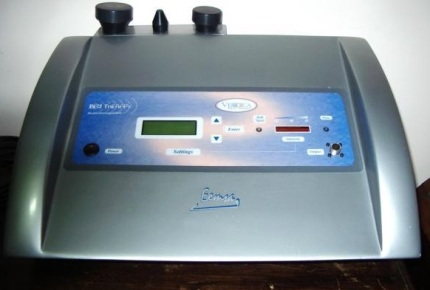
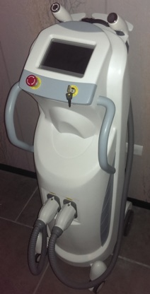

Aparatologia
(Selecciona un aparato de la lista)
(Selecciona un aparato de la lista)
-
Radio Frecuencia Terapéutica  Bem Therapy
Es un aparato bio-electro-magnetismo que envía energía capacitiva regular, estimulante de los procesos metabólicos. Favoreciendo la circulación sanguínea linfática, mejorando la oxigenación. Efecto antioxidante, ayuda a la reparación de los tejidos, este aparato es tanto facial como corporal ayudándonos al complemento de varios tratamientos• Degradación: Este movimiento se efectúa en presencia de grasas, quistes y otros, efectuándolo en pequeños círculos.
• Drenar: Se realiza el barrido de acuerdo a la secuencia de drenaje dependiendo de cada zona.
• Moldear: Este movimiento es el que da un resultado visible, se hace en forma ascendente como si se moldeara en masilla. -
Radio Frecuencia de alta potencia Radio Frecuencia de alta potencia
Ofrece realizar tratamientos; inmediatos progresivos de larga duración. Tomando como principal fuente de energía las emisiones de RADIO FRECUENCIA, ya que es la que se encarga de los procesos de desnaturalización promoviendo una regeneración de la célula afectada brindando resultados de manera progresiva.
La radiofrecuencia es la encargada de depositar en los tejidos radiaciones electromagnéticas, las cuales oscilan simultáneamente en el campo eléctrico y magnético, el cual cambia de positivo a negativo en fracciones de segundos causando un movimiento rotacional de las moléculas generando calor trabajando de manera selectiva. -
E Light (Luz pulsada con radio frecuencia) 
E Light (Luz pulsada con radio frecuencia)
El equipo E-LIGHT puede manejar en forma combinada ambas emisiones en un mismo disparo, lo que aumenta la penetración en la piel y favorece los cambios, pero también es posible utilizar en forma individual cada una de ellas, lo que permite atender todo tipo de pieles de manera personalizada.
Tanto la IPL como la Radiofrecuencia generan una terapia a través de un incremento térmico de forma localizada. Al acompañarse éstas, se gana profundidad en el trabajo debido al estímulo generado en las moléculas de agua presentes en todos los tejidos. En los tratamientos de depilación, el trabajo de la IPL se basa en la capacidad de absorción de la energía por parte de la melanina existente en el vello a tratar. Sin embargo en casos como vello rubio, vellosidad clara o despigmentada, resulta muy conveniente el acompañar la emisión IPL junto con la RF, la cual traspasará la resistencia de la capa epidérmica y los diversos pigmentos presentes en ésta, generando un incremento en la temperatura en las capas profundas que se acompañaran, sumando ambas para potenciar el trabajo individual. -
Dermoabrasión punta diamante MICRODERMOABRACION
La microdermoabrasión e un tecnología de belleza, exfolia la piel utilizando puntas diamante de diferentes calibres en forma de varita, las cuales actúan mediante el tallado continuo y el aspirado de la capa más superficial de la piel; esto hace que las células muertas y dañadas sean retiradas automáticamente, a las vez que se estimula el crecimiento de las células nuevas y la circulación sanguínea, y se promueve la formación de fibras colágenas. Combinando este procedimiento con el cuidado apropiado de la piel, la piel se vuelve más suave, dando un aspecto saludable.
BENEFICIOS:
- Recuperación de la calidad de la piel y reconstruye la piel sana.
- Atenúa las arrugas, endurecimiento y envejecimiento de la piel.
- Mejora las líneas de expresión y la flacidez de la piel
- Elimina marcas
- Mejora poros abiertos, pequeñas cicatrices y hendidura cóncavas.
- Estimula la circulación y metabolismo de la sangre
- No ocasiona irritación, no se presentan dolores fuertes, no necesita de anestesia
- Adecuada para varios tipos de piel, inclusive pieles sensibles. -
Láser (Sinergy Light) rojo, infrarrojo LASER (Sinergy Light rojo e infrarrojo)
El uso del láser y fotodiodos a una intensidad relativamente baja, ha sido promovido desde los años 60s como un tratamiento efectivo para una variedad de condiciones como artritis, daños en tejidos blandos y en dolor, en su modalidad terapéutica. Aplicaciones y beneficios de SinergyLight láser en cosmetología y medicina estética, se da bajo tres conceptos:
Energetiza a la mitocondria (es la encargada de suministrar energía a la célula para todas sus funciones biológicas). Por ello activa los metabolismos normales de la piel. Permeabiliza las membranas tanto celulares como capilares (esto facilita el intercambio celular y drenaje de los tejidos), ello permite nutrir, oxigenar y drenar la piel. Equilibra el medio proteico de la dermis especialmente el ciclo de la colágena. Esto permite fortalecer el sistema de soporte de la piel, resultando una gran mejoría en líneas de expresión y el proceso cicatricial.
Por lo anterior, podemos decir que el láser regenera y equilibra todo tejido blando, por lo que puede ser de gran apoyo en:
Acné:
como desinflámate de las lesiones y antibacteriano, equilibrador del tejido y cicatrizante.
Cicatrices:
activa la regeneración de la piel favoreciendo la recuperación.
Líneas de expresión:
apoya al tejido epidérmico disminuyendo la apariencia de las mismas.
Manchas o pigmentaciones: No trabaja sobre la disminución de la coloración de la piel, pero si favorece para evitar que se vuelva a pigmentar.
Sensibilización:
equilibra el metabolismo de los tejidos y los revitaliza, favoreciendo el fortalecimiento de la piel, evitando asi la sensibilización cutánea.
Piel desvitalizada:
activa la circulación sanguínea oxigenado y nutriendo la piel, dando una apariencia de vitalidad y lozanía en la misma.
-
Láser (III Light) azul, rojo, infrarrojo LASER (III LIGHT azul+rojo+infrarojo)
La pluma emisora de III Light cuenta con cuatro diodos láser que generan un grupo (clúster) de aplicación de 2.5 cm de diámetro con alta densidad de energía debido a la potencia media de cada diodo. La alta densidad de energía simplifica ampliamente el trabajo de irradiar toda la superficie a tratar. Emisión laser en tres diferentes longitudes de onda:
EMISION AZUL
Es reconocida por su capacidad de inhibir procesos bacteriales y virales, actúa como antiséptico, ideal en tratamientos contra el acné. Excelente desinflamatorio por lo que resulta muy adecuada la aplicación de la emisión azul después de tratamientos con efecto térmico como IPL, radiofrecuencia, peelings, etc., reduce la sensibilidad causada por dermoabrasiones y extracciones, tiene un efecto astringente. También se recomienda en pieles dañadas por quemaduras.
EMISION ROJA
Presenta efecto regenerativo, debido a que su frecuencia es más compatible con la celular. Su penetración aproximada es de 0.6 cm., en heridas abiertas es de más de 2cms. Por lo que su efecto será mayor y muy notorio a nivel de epidermis e hipodermis. Se absorbe primordialmente en la hemoglobina por lo que también se llega a utilizar en las terapias de irrigación sanguínea.
EMISION INFRARROJA
Excelente efecto antianálgico para terapia del dolor, debido a su gran capacidad de penetración directa en tejido blando, la cual llega a alcanzar más de 3 cms.
Tradicionalmente la sugerencia que daban algunos de los estudiosos de la laserterapia era combinar ambos tipos de rayo láser cuando fuese posible. En la actualidad se llega a sacrificar algunas bondades de búsqueda de una mayor penetración, o bien, de sacrificar penetración por lograr otros efectos. -
Skin Scruber Skin Scruber
Nos ayuda a incrementar la permeabilidad de las paredes celulares, así como el intercambio intracelular. Por medio de ultrasonido que trasmite un muy alto de vibraciones por segundo.
El Skin Scruber induce en el tejido el micromasaje produciendo un incremento en la temperatura local del tratamiento, en los espacios intracelulares y extracelulares, hay modificaciones quimicas.
-
Ultrasonido ULTRASONIDO
Este se encarga de eliminar de forma eficaz y no quirúrgica los depósitos de grasa en el organismo, utilizando una energía basada en un haz de ultrasonidos focalizados, lo que permite destruir a la célula grasa sin dañar los tejidos que la rodean. La energía que emiten estos equipos, no queda depositada en el organismo, por lo cual su efecto no será progresivo.
Este método trabajara únicamente de forma selectiva dañando al adipocito, pero sin repercutir en la epidermis, por lo cual sus resultados se concretaran a los obtenidos en la sesión y a nivel de las grasas, obligando a los médicos a ofrecer técnicas complementarias que trabajen la flacidez y daño cutáneo ya que este equipo cuenta con acción limitada. -
Cavitación (Lipo X) LIPO X
Produce ondas ultrasónicas en un rango de 20 a 70 KHZ, tiene la capacidad de causar el efecto llamado “CAVITACIÓN” generando vibraciones de alto impacto a una velocidad ultrasónica de 40,000 HZ aproximadamente.
- Crea innumerables burbujas de oxigeno alrededor de la célula grasa (adipocito) - Transforma la grasa de un estado solido a un estado líquido
- Elimina la grasa por medio del sistema linfático
- Tratamiento de celulitis
- eliminación de grasas localizadas
- reducción de medidas
-
Carboxiterapia (Carbo 3000) CARBO 3000
El Carbo 3000 es un modelador corporal profesional y progresivo. Es un producto para el tratamiento de la obesidad que tiene grandes resultados en el tratamiento de celulitis y enfermedades de la piel. Cuenta con un método de infusión de 3 vías y filtro. La terapia con dióxido de carbono (CO2); es inyectada en la capa de grasa subcutánea para reducir la cantidad de grasa corporal. Es segura debido a que no requiere de hospitalización ni del uso de anestesia, usted puede regresar a su vida normal después de su aplicación, no quedan moretones.
- Con la aplicación del sistema de calentamiento, el dolor puede ser disminuido durante el tratamiento.
- El gas del dióxido de carbono inyectado destruye físicamente las células grasas y los ácidos grasos dentro de ellas son liberados.
- Trabaja para la expansión de los vasos sanguíneos periféricos de tal manera que los ácidos grasos que se liberan de las células grasas son descargados a través de los vasos sanguíneos.
- Mejora la elasticidad de la piel y ayuda a que se recupere la piel agrietada, mientras que la verdadera capa de piel aumenta su grosor.
- En general ayuda a mejorar las irregularidades de la piel.
-
Termoelectroestimulador Termoelectroestimulador (Ultimate Corpo 2a Generación)
Equipo diseñado para tratamientos corporales, combina dos tipos de terapias; termoterapia y electroestimulación las cuales se complementan a la vez que potencializa sus efectos, obteniendo espectaculares resultados en tratamientos de reducción de peso y/o medidas, celulitis, reafirmación, lipólisis, y como apoyo en algunas terapias de rehabilitación muscular y medicina estética. Su diseño incluye diferentes ondas eléctricas que actúan a nivel linfático, que activan el metabolismo, provocando un aumento del trabajo muscular y de gasto calórico, todo mientras se aplica calor ligero (opcional) a la zona tratada aumentando el riego sanguíneo, promoviendo la eliminación de toxinas por medio del sudor.
Ultimate Corpo 2ª Generación a la vez que es intenso no resulta agresivo para el paciente ya que, los programas se complementan con un trabajo inicial de analgesia y un final de relajación. Dentro de los programas de este equipo podemos mencionar:
Celulitis Dura, celulitis blanda, celulitis edematosa, Reafirmación piel deshidratada, Post-parto, Metabolizante, Lipolítico, Obesidad local, Obesidad general, Pre-quirúrgico, Post-quirúrgico, Electro- escultura, Hipertrofia, Relajante, Descontracturante, Depurativo, Fortalecimiento, Circulatorio -
REVERSE REVERSE
Reverse es una tecnología de vanguardia que utiliza la electro estimulación de frecuencia media y conjunta en un mismo equipo para aplicaciones facial y corporal; Su sistema de frecuencias medias permite que, atreves de una emisión portadora de más de dos mil ciclos por segundo (2khz), la energía penetre profundamente en el cuerpo sin lesionar la piel y con total seguridad confort para el paciente. Reverse trabaja a nivel de piel, panículo graso, facia y musculo. De acuerdo a los trenes establecidos tonifica, hidrata, drena, y desinflama.
FACIALES:
Piel normal, Piel grasa, Piel alípica, Piel crono envejecimiento, Recuperación muscular/ descontraturante, Contorno de ojos, Mantenimiento facial.
CORPORALES:
Tonificación, Hidratación, Pre quirúrgico, Rehabilitación, Depurativo, -
Presoterapia PRESO TERAPIA LX7
Sistema de compresión intermitente
La preso terapia es un tratamiento médico y estético que utiliza la presión de aire para estimular automáticamente el sistema linfático y circulatorio, produciendo a su vez; relajación en los músculos, al igual que lo haría un masaje corporal.
Diferentes cámara de aire son capaces de ejercer presión positiva síncronamente o intermitentes en pie, tobillos, pantorrillas, muslos, cintura, abdomen, brazos, antebrazos, y muñecas dependiendo de la zona a tratar; Estimulando la eliminación de toxinas por medio de los drenajes linfáticos, mejorando el riego sanguíneo a través de todo nuestro organismo, comprimiendo y relajando los músculos de nuestro cuerpo.

Reservar una cita
Mandira Spa te recomienda ser puntual para no afectar el tiempo de tu servicio.Agendar una cita.